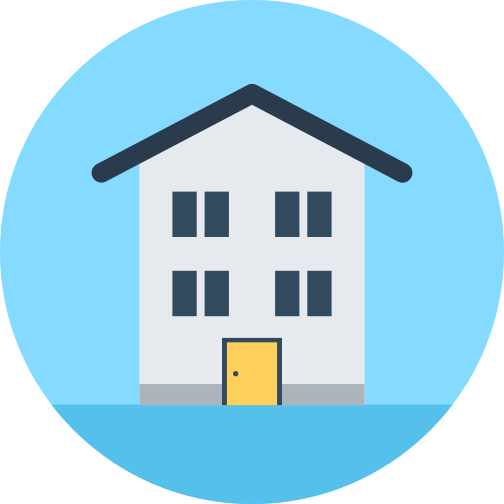

Research insights
Understanding the problem
I had bring together individuals research data i conducted and created broad or high level theme into which the major challenges faced by the people fell under. The major challenges were:

General Living
Problems
Getting information about healthy living,exercising facilities/access to them, etc.

Social and
Cultural Differences
making friends, understanding the benefit of healthy living, food choices, etc.